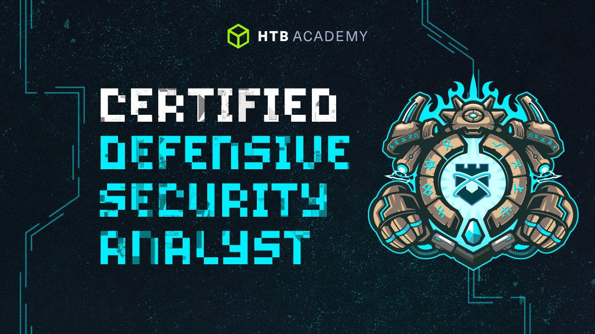
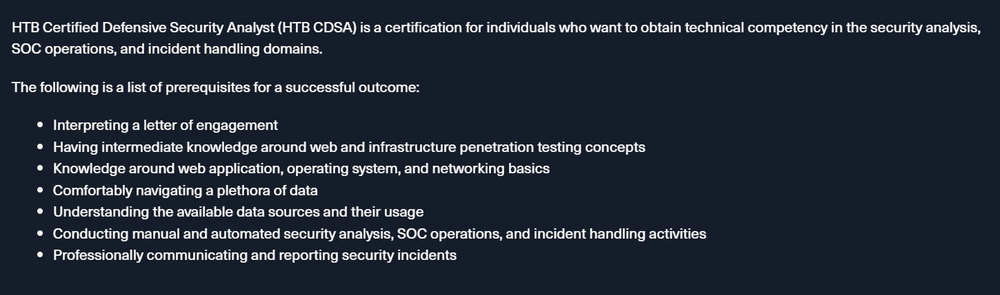
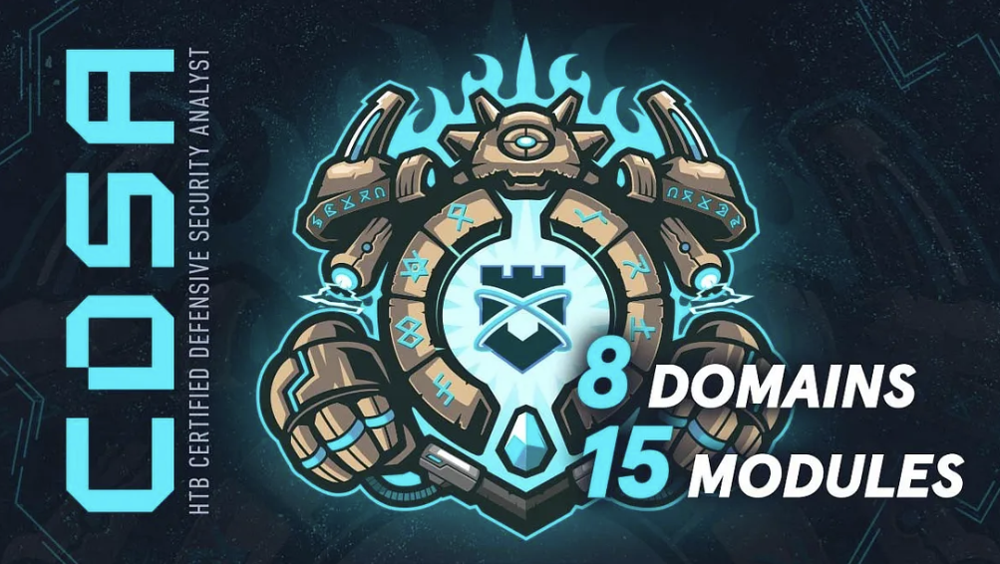

1. Introduction:
I'm happy to announce that I'm HTB CDSA certified finally (no pun intended)!!!!!!!!! In this blog I will be sharing my certification journey. Before all that I would love to thank Brainspill3r for giving me the one year silver subscription worth 490 dollar which came with a exam HTB exam voucher + 1 year access to all modules.
2. What is CDSA and who is it for?
HTB Certified Defensive Security Analyst (HTB CDSA) is a highly hands-on certification that assesses the candidates’ security analysis, SOC operations, and incident handling skills. The following are the learning outcomes:
I pursued this certification mainly to learn Threat Hunting and understand how various attacks carried out by Red Teamers and Pentesters are detected. The depth of some modules was fascinating. For example, I always knew that injecting Mimikatz into memory could be used for evasion but never really understood how this worked at the lower level. Completing the modules gave me that clarity. If you're curious, I highly recommend reading through those modules 😉! Even though Red Teamers carefully plan their attacks, they always leave traces. Concepts like C# injection and process injection were covered at a base level, and I learned how they can be detected.
I highly suggest this certification not only for individuals interested in blue team but also for Red Teamers and Pentesters. Understanding how Blue Teamers operate can offer valuable insights into evasion techniques. To be an exceptional Red Teamer or Pentester, it's always good to know how defenses work.
Red TeamVS Blue Team : One thing I noticed is that for pentesting, you don't really need to understand how the Kerberos protocol works; you can just use tools to exploit it with attacks like Kerberoasting or AS-REP roasting. But for blue team work, you need to understand it at a basic level to detect these attacks and know how tools like Rubeus operate.
3. Pre-Requisites
I personally think to do Blue Teaming well, one should know how attackers work, so it's important to understand pentesting (both Active Directory and Web penetration testing) and basic red teaming. I highly suggest anyone taking the CDSA course without a pentesting background to first set up a simple AD homelab and practice various AD (Active Directory) attacks. There are many learning resources available, from YouTube to HTB Academy modules. Also, familiarize yourself with the OWASP Top 10 and how to exploit it. The course covers AD attacks in detail, but learning it beforehand makes things much easier.
HTB themselves also have SOC Analyst Prerequisite path which covers all the pre-requisisite mentioned earlier and I highly sugggest anyone with non-pentesting background to complete all the 10 modules in the path. Another advantage of completing this path is the "Intro to Assembly module" and this greatly helps people to familiarize with Assembly Language Programming (ALP) as basic knowledge of ALP is required to complete Intro to malware analysis module.
Important Note : Apart from this I don't think you need have any previous knowledge blue team or tools such as Splunk or Elastic, the modules teach it really well.
4. Course Overview

CDSA path consists of the following 15 modules: (if you meet the pre-requisites, all the 15 modules are much easier to learn)
For me it took almost 4-5 months to finish all the modules. I think the preparation time greatly varies from people to people.
5. My background
I hold penetration testing certifications like PNPT from TCM Security and eJPTv1 from eLearnSecurity and hence I'm very much familiar with Active Directory and Web penetration testing. I've also done multiple challenges on Hack The Box and TryHackMe, including HTB Pro Labs (Dante, Zephyr, Offshore). On the Blue Team side, I've completed Practical Malware Analysis and Triage (PMAT), Detection Engineering, and Digital Forensics courses from TCM Security . I also hold a Bachelors degree in Electronics and Communication engineering (I know advanced networking and basic assembly language programming) and MSc in Cybersecurity Engineering.
5. Modules Review
All the modules were well structured and very detailed.
Although I liked the modules, the following are my favorite modules:
Introduction to Threat Hunting & Hunting With Elastic - This module focuses on investigating incidents by analyzing data to understand how an attack unfolded through each stage of the attacker’s kill chain. Threat hunting becomes engaging as you correlate evidence left behind, identify tactics, techniques, and procedures (TTPs) used, and piece together how the adversary advanced through the environment.
Understanding Log Sources & Investigating with Splunk- In this module, one has to investigate incidents and detect cool attacks like C# injection, stealthy LSASS access using comsvs.dll, and process injection.
Introduction to Digital Forensics 🔎 - Memory and disk forensics were performed, and Cobalt Strike beacon execution was analyzed and it was very fascinating to see the evidences left behind by the beacon.
Windows Attack and Defense ⚔️ 🛡️- It covered event IDs and ideas for detecting Windows and AD-based attacks. It also taught how to set up a honeypot and understand how event IDs for detecting the attacks can vary when a honeypot is used.
Intro Malware Analysis🐞🪲 - This segment taught both and dynamic analysis of malware. The dynamic analysis part seemed hard in the start but as I put time into it and learnt it patiently, I really enjoyed it.Completing the skills assesment of this segment gave me a immense sense of achievement.
6. Extra Preparation?
Completing all the 15 modules is more than enough and the modules greatly prepare you to face the exam. I completed all the 15 modules and just did Boss of Splunk 2. Boss of Splunk 2 is a good practice and it you get chance to investigate a complete incident but I wouldn't tell tell its mandatory to do it.
Before taking the exam, I would recommend to revise all the modules and hence take good notes and do the modules sincerely. For the reporting, Sysreptor 🦖 comes in handy and makes reporting so easier, you don't have to worry much about the strcuture or formatting because its already done for you in the template. DFIR Report site contains various incident response reports and going trhough them not only gives you as idea of reporting but also familiarizes you with various incidents and how to detect it. Apart from this HTB's own Incident response report can give you an idea of how to write your exam report.
7. CDSA Path Feedback
Although I did mention that all the modules were very well structured and greatly detailed, I also have some feedback for the CDSA path:
1. The Digital Forensics module was awesome, but then I felt like there was slightly a lack of information regarding Velociraptor tool 🦖, It would be great if the module explained it in more detail.
2. Phishing 🎣 being the most popular attack in present day to gain foothold, there could be an exclusive module on how to detect phishing email.
3. I personally enjoyed the threat hunting modules and would love to see more threat hunting modules added. (Looking forward for a module on Threat Hunting a C2 beacon).
4. The capstone for malware analysis 🔎 could have been a challenge to analyze a malware completely i.e. both statically and dynamically.
7. Exam Overview
CDSA exam is a 7- day exam in which one has to investigate 2 incidents and submit a report. One has to find atleast 17 flags out of 20 flags to the pass the exam. I found 17 flags and completed my exam in 2 days but the most challanging part was the reporting.
The reporting is very challenging because one has to chain all the findings and has to conclude how the attack happened. For me since I had a pentesting/red-teamming background I wanted my report to narrate the incident perfectly without missing any chain and MITRE Framework comes in handy. Lets say for example you are looking for the persistence stage, you can check MITRE Framework for the techniques employed by the attacker to achieve persistnce and can look for it.
9. Some Special Mentions
I would love to thank the HTB Support Team 🫸🫷 (Mike, Miticosm, PoURaN and others) who helped sort out the issues I had regarding my account. HTB Support Team is amazing, if you have any issue regarding the exam, they quickly respond to it and sort it out as well.
H0lyWat3r💧( https://nzf07.github.io/ ) was the reason I enterred the the lucky draw spin conducted by Brainspill3r, I was out that day and hence didn't join the stream and joined it in the last moment and hence didn't want to participate in the draw but H0lyWat3r insisted me to do it and I did it and I won it as well!! Thanks H0ly! Life is such a butterfly-effect 🦋 indeed I guess.
I would also like to thank scriptie who gave me a lot of insights on red teamming and kit3ak who always shared to me his real-world threat hunting experience.
10. Conclusion
I'm incredibly grateful for the opportunity to take this exam 🙌! The experience was nothing short of amazing, and I learned so much throughout the process. The exam was challenging; I had to apply the concepts I learnt from all the modules to find evidence of the attack and, for reporting, piece everything together to create a cohesive incident analysis. It was a demanding but incredibly rewarding experience. I look forward to seeing Hack The Box release even more advanced defensive certifications 🛡️! At the same time, I'm planning to further strengthen my red-team skillset. There are still many miles to go..........